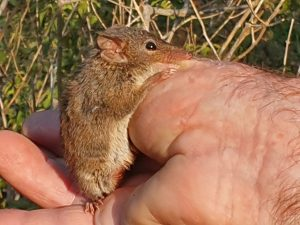

A Biodiversity Development Assessment Report is a formal statutory requirement under the Biodiversity Conservation Act 2016 (NSW). It’s triggered under NSW’s Biodiversity Offsets Scheme when a development proposal intersects with mapped high biodiversity value land, exceeds certain clearing thresholds or has potential to cause significant impact on threatened species or vegetation communities. Getting it right matters – a BDAR must be technically sound, defensible under legal scrutiny, and carefully calibrated to the specific conditions of your site.

Experience You Can Rely On
Greenloaning Biostudies has been delivering ecological assessments across NSW and Queensland since 1996. Director Alison Martin is an Accredited Biodiversity Assessment Methods Assessor with a Masters of Environmental Law and over 40 years’ experience in flora and fauna surveys, habitat assessments, and biodiversity offset determination. This depth of expertise in combining ecological knowledge with legislative fluency is precisely what a robust BDAR demands.
End-to-End BDAR Management
Greenloaning manages every stage of the BDAR process on your behalf: From initial desktop assessment and targeted field surveys through to credit determination and final reporting. Our team brings methodical fieldwork practice and a thorough understanding of both the legislative framework and the ecology involved, including complex or sensitive sites that present competing considerations.
This has included sites that are historically disturbed yet supporting native vegetation regeneration and fauna habitat, sites requiring microbat trapping and acoustic monitoring, Koala habitat assessment via SAT Plot surveys, and careful assessment of threatened species detections in context. The result, consistently, is reporting that is clear, defensible, and fit for regulatory purpose.
From navigating complexity to delivering precision, Greenloaning Biostudies brings the experience that BDAR assessments demand. To view recent BDARs we’ve worked on visit our Projects page.